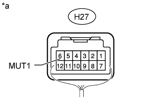

AUDIO AND VISUAL SYSTEM (w/o Multi-display) > Mute Signal Circuit between Radio Receiver and Multi-media Interface ECU |
| 1.CHECK MULTI-MEDIA INTERFACE ECU |
|  |
Measure the voltage according to the value(s) in the table below.
| Tester Connection | Condition | Specified Condition |
| H27-6 (MUT1) - Body ground | Engine switch on (ACC), audio system is playing | Higher than 3.5 V |
| Audio system is changing modes | Below 1 V |
| *a | Component with harness connected (Multi-media Interface ECU) |
|
| ||||
| OK | ||
| ||
| 2.CHECK HARNESS AND CONNECTOR (RADIO RECEIVER - MULTI-MEDIA INTERFACE ECU) |
Disconnect the H28 radio receiver assembly connector.
Disconnect the H27 multi-media interface ECU connector.
Measure the resistance according to the value(s) in the table below.
| Tester Connection | Condition | Specified Condition |
| H28-6 (MUTE) - H27-6 (MUT1) | Always | Below 1 Ω |
| H28-6 (MUTE) - Body ground | Always | 10 kΩ or higher |
|
| ||||
| OK | ||
| ||